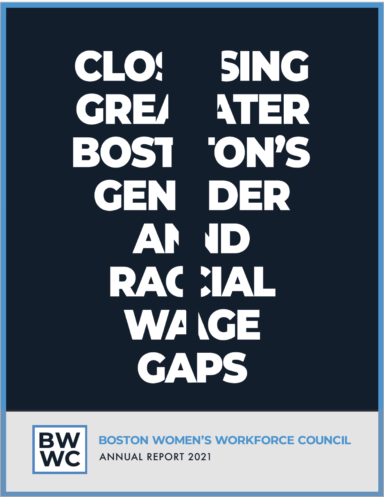
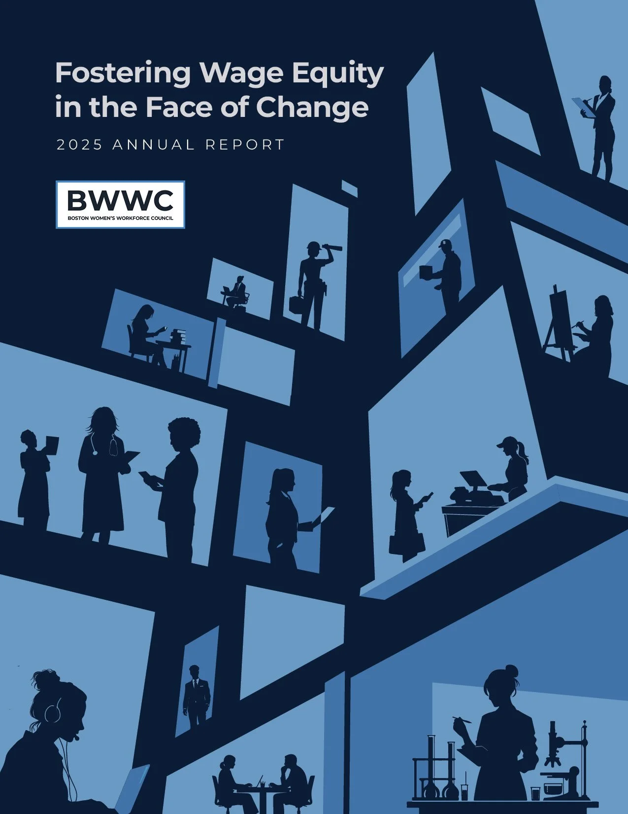
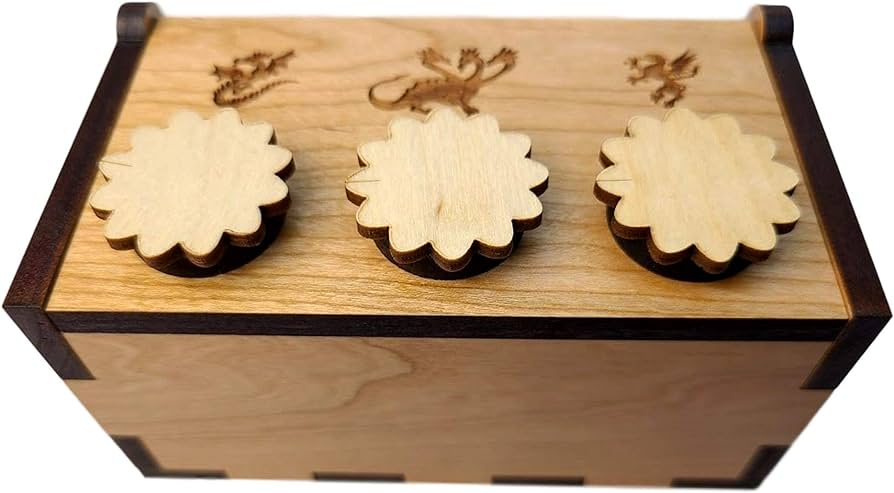
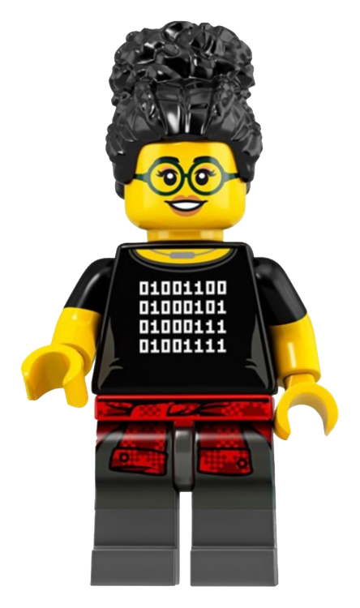
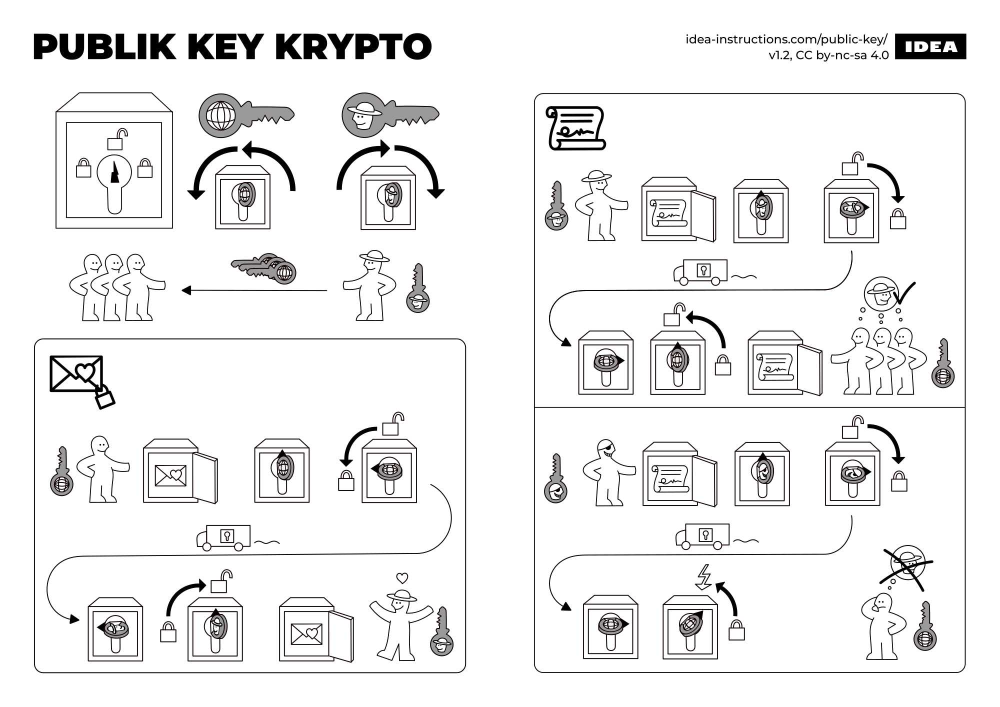
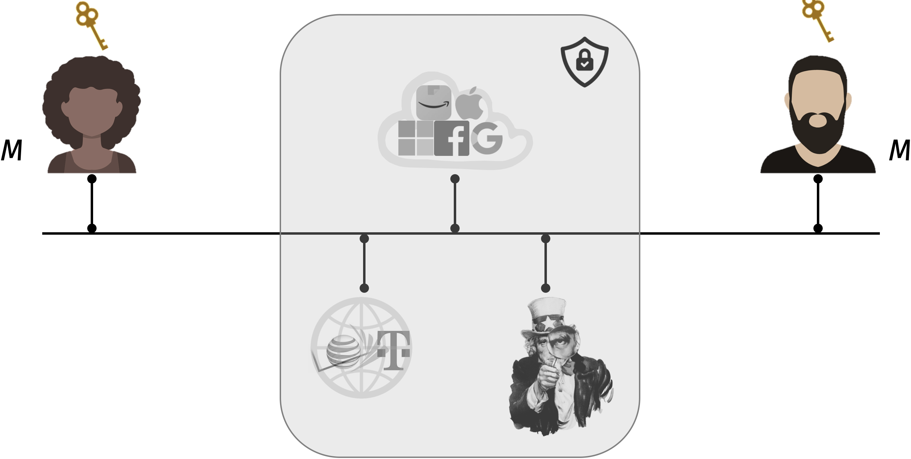
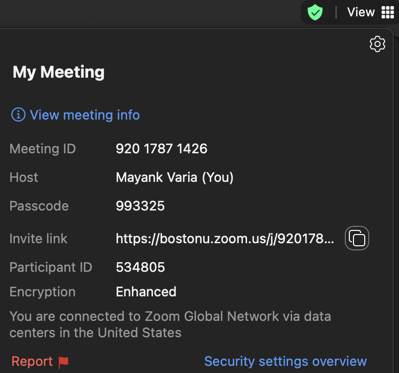
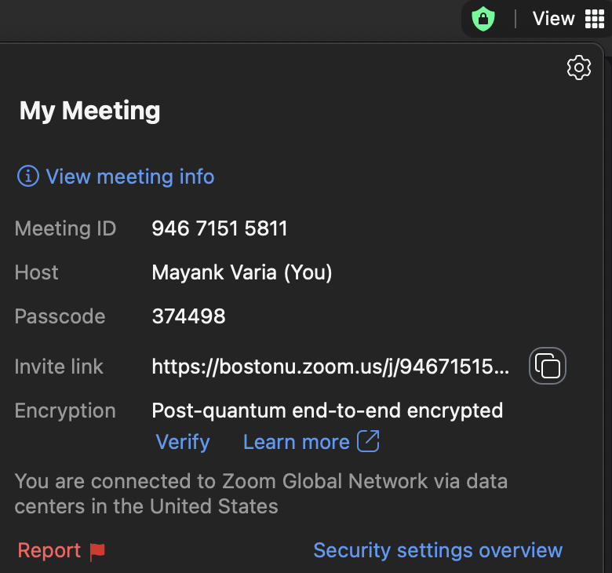
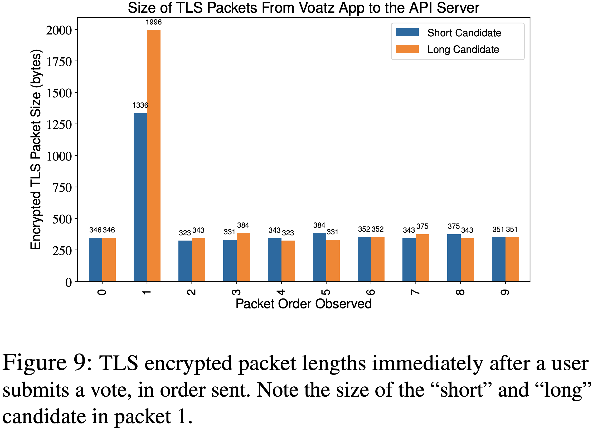

The power of encryption to protect the confidentiality of data at rest and in transit
The security objectives of symmetric key encryption
How to construct a one-time pad, and why it is rarely used in practice today
Review
Cryptology comes from two Greek word parts:
kryptos, meaning secret or hidden
logy, meaning the study of
So the goal of cryptology is to study the art of keeping secrets.
More generally, cryptographic systems provide some or all of the objectives in the CIA triad:
Confidentiality, meaning to keep data or people’s identities hidden from others
Integrity, which means preventing raw data or the data science results from being altered, or at least allowing for detection of tampering
Availability, or ensuring that data science remains accessible and censorship-resistant
So far, we have completed two units of this course.
Protecting data integrity using digital signatures and message authentication codes
Protecting data availability with broadcast and blockchains
There are two units remaining in this course.
Protecting data confidentiality using encryption
Protecting data science, i.e., working with data you cannot see
13.1 Secret splitting
Let me give you an early preview of Unit 4. I will show you how cryptography can protect data science by way of a story – a true story.
In 2013, then-Boston Mayor Tom Menino commissioned a working group to:
Write a report about how to “make Boston the premier city for working women”
Establish a new group called the Boston Women’s Workforce Council to find and implement ways to close the gender and racial wage gap
The Council established a Compact – or pledge – that has been signed by more than 250 companies throughout the greater Boston area. The companies promise to do three things; I want to draw your attention to the part about contributing data.
The text of the pledge reveals the tension between data confidentiality and data analysis.
Contributing their employee data anonymously: everyone wants to keep their own salary data confidential
Measurement to create a snapshot of the gender/racial wage gap in Greater Boston: everyone wants to publish the results of the data analysis
How can the companies perform data analysis while preserving data confidentiality? The BWWC initially tried to find a trusted intermediary to hold onto the data and perform the data analysis.
However:
No company wanted to hand over their salary data to anyone else
Nobody wanted to receive salary data from companies across the city
Nevertheless, the Boston Women’s Workforce Council has run the data analysis to calculate the city-wide gender and racial wage gap. They have done it 6 times now.


The website
Several of us at Boston University have worked with the Boston Women’s Workforce Council and the city to design, build, and deploy a web-based survey form. This form allows companies to contribute their data toward the wage gap calculation without anyone learning their salary data — not even us!
Here’s what our website looks like.
Someone in (say) the HR department of each participating company inputs the number and total compensation of all employees in each group of gender, race/ethnicity, and job category
The spreadsheet follows the format of a U.S. Equal Employment Opportunity Commission form that all large employers must fill out every year
100talent.org website in 2017
So far, this looks like an ordinary website. The only special part about it is what happens after you click on the “submit” button.
With a normal website, clicking “submit” would cause the data to be sent over to the server
But this website is different: when you click on the “submit” button, the data itself does not go anywhere!
Instead, we use cryptographic secret splitting to split the data between BU and the Boston Women’s Workforce Council. We will still be able to calculate the city-wide total (i.e., the sum across all spreadsheets), but without learning any information about individual employees or employers.
Let’s see how this works using a smaller-scale version of the wage gap project. Suppose that:
There are only 3 companies that participate in the data analysis
We only want to calculate one cell within the spreadsheet
Setup
Let’s call the employers’ individual answers \(a\), \(b\), and \(c\), respectively. Our objective is for:
The city of Boston to learn only the sum of these numbers \(a + b + c\)
Everyone else (including us at BU) to learn nothing
Technically, everyone is interested in the average, not the sum. But since the number of companies is known, it is straightforward to convert from one to the other.
Contributing data
Each company splits their secret data between BU and the Council.
The companies send random numbers (e.g., \(a_1\) and \(a_2\)) that have a uniform distribution subject to the fact that they sum to the real secret
\[a = a_1 + a_2 \bmod{2^\ell}\]
Neither BU or the Council have learned anything so far; they just hold a random number
Our overall goal is for the City of Boston to be able to compute \(a + b + c\), which is the sum of all six numbers held by BU and BWWC.
Here comes the key insight: because addition is commutative, it doesn’t matter whether we
first add the numbers vertically and then horizontally, or
first add the numbers horizontally and then vertically.
And the latter option preserves data confidentiality!
Aggregating data
BU and the Council add up the three numbers that they possess, and send these results over to the City.
Each of these numbers individually is uniformly random, and it doesn’t reveal anything about \(a\), \(b\), or \(c\) individually, so it preserves the companies’ privacy.
\(a\)
\(b\)
\(c\)
\(a + b + c\)
\(a_1\)
\(b_1\)
\(c_1\)
\(a_1 + b_1 + c_1\)
\(a_2\)
\(b_2\)
\(c_2\)
\(a_2 + b_2 + c_2\)
Calculating the output
Finally, the City of Boston can add the numbers on the right to reconstruct the sum \(a + b + c\), which is the desired city-wide aggregate statistic. This is what our website does.
Interactive question. All of the calculations above are done mod \(2^\ell\). Suppose instead that we split \(a = a_1 + a_2\) without using modular (or clock) arithmetic. Why would that be an issue?
The math no longer works for the city to obtain the correct answer \(a + b + c\)
It is impossible to sample \(a_1\) uniformly at random from the integers or real numbers
There is no longer data integrity for their true value \(a\)
Computers cannot add large numbers without using modular arithmetic
TipAnswer
Integers or real numbers are unbounded in size, and it is impossible to sample uniformly at random from a set of infinite size. (What would the probability of choosing each value be?)
The only way to sample from an infinite set is to allow for some options to occur more often than others. But then seeing \(a_1\) would allow BU to learn information about the actual secret \(a\). Also, it would take too much network and storage space to send \(a_1\) to the BU server.
Summary
This new way of conducting data science was made possible by cryptographic secret splitting, also known as secret sharing.
Secret splitting enables a group of parties to jointly hold a secret, but in such a way that no individual person or small coalition in the group knows the secret.
Each person holds only a single share of the secret – where the word “share” here is used in the sense of a stock share, not in the sense of sharing data.
You can think of secret splitting like a special type of lockbox. Inside the box is a secret message that nobody knows.
If enough shares are inserted, then the box will open and the secret will be revealed
Otherwise, the lockbox remains closed and nobody has access to it

13.2 Encryption
In Unit 3, we will study encryption and its role in protecting data confidentiality.
“Cryptography is about communication in the presence of an adversary.”
– Prof. Ron Rivest
Alice
Mallory
Bob
\(\longrightarrow\)

\(\longrightarrow\)
Remember that a digital signature does not provide data confidentiality. Instead, its goal is unforgeability.
In this example, Alice sends Bob a message with a 64-byte signature. Note that the original message contents remain in the clear.
# using libsodiumfrom nacl.signing import SigningKey, VerifyKeyfrom binascii import hexlify# Alice's key pairsecret_key = SigningKey.generate()public_key = secret_key.verify_key# Alice's message and its signaturemessage =b"Hello Bob!"signed_message = secret_key.sign(message)assert public_key.verify(signed_message), "invalid signature"print("Length of original message:", len(message), "bytes")print("Length of signed message: ", len(signed_message), "bytes\n")print("Signed message:", hexlify(signed_message[:3]) +b"..."+\ hexlify(signed_message[-13:-10]) + signed_message[-10:])
Length of original message: 10 bytes
Length of signed message: 74 bytes
Signed message: b'9712ac...e3cf0bHello Bob!'
Digital signatures allow:
Alice to “lock” her message using her secret key
Anyone to “unlock” the message using the corresponding public key
But what if we turn this picture around? What if:
Anyone can lock a message using the public key
Only Bob can unlock the message with his secret key
as shown in the left half of the figure?

Informal description of encryption and digital signatures (source: idea-instructions.com)
The result is a public key encryption scheme. This new primitive does protect data confidentiality.
from nacl.public import PrivateKey, PublicKey, SealedBox# Bob's key pairsecret_key = PrivateKey.generate()public_key = secret_key.public_key # share this with the world
# Alice's message and its encryptionmessage =b"Hello, Bob!"sealed_box = SealedBox(public_key)encrypted_message = sealed_box.encrypt(message)print(hexlify(encrypted_message))
Also as we will see, encryption schemes are randomized: if you encrypt the same message twice, you will get different results. Hence, encryption requires good sources of randomness.
The goal of Unit 3 of this course is to study encryption and its role in:
Protecting data at rest on your laptop or phone
Protecting data in transit over the Internet or messaging app
The power of encryption
Historically, encryption schemes have been designed and used by governments. It played a significant role in both of the world wars in the 20th century.
Modern encryption allows for confidential data exchange over the Internet. Alice can send a chat message, email, file, or database across the internet so that only Bob can read it.

Internet communication, with encryption
As a result, encryption is a powerful tool with immense social consequences.
“Cryptography rearranges power: it configures who can do what, from what.”
– Prof. Phillip Rogaway (UC Davis)
In particular, having the secret key gives someone the power to decrypt and read a message.
Encryption on the Internet is often performed in one of two ways.
Client-server encryption
End-to-end encryption
Alice encrypts her message with the tech company’s key (and hence, they can read it). Separately, the tech company encrypts a message to Bob.
Alice encrypts her message directly to Bob. While the message passes through the server, the tech company cannot read it.


You might wonder: what if a powerful attacker steals cryptographic keys? This may be possible by (for example) hacking or compelling Alice or Bob to reveal their keys. We will discuss these risks in future lectures. For today, I want to emphasize the value of universal encryption on the Internet.
With encryption: reading someone’s messages is costly, targeted, and observable
Without encryption: reading someone’s messages keys is simple, universal, and covert
13.3 Symmetric key cryptography
It is possible to construct public key encryption based on hard math problems like factoring and discrete logarithms.
But we will not study public key encryption in this course. In fact, I’m going to make a bold claim: even though it exists, in nearly all data science applications you should not use public key encryption! I say this for two reasons.
Public key encryption is overkill: it allows anyone on the Internet to send you messages, but in most applications, you know exactly who is going to send you a message
Public key encryption is risky: losing control of the secret key for an encryption scheme has immediate, irrecoverable consequences (we will discuss this in Lecture 16)
One key, rather than two
As a result, we focus in Unit 3 on symmetric key cryptography.
We already know how to build a message authentication code for the two parties to send messages to each other with integrity (each party can both tag and verify)
Symmetric key encryption allows two parties to send messages to each other with confidentiality (each party can both encrypt and decrypt)
Looking ahead: these primitives are nearly always used together, and the combined primitive is called authenticated encryption.
“Confidentiality xor authenticity is not possible. If you don’t have both, often you don’t have either.”
– Prof. Matthew Green (Johns Hopkins)
For today though, let’s focus on encryption by itself.
Goals and non-goals
Let’s discuss the objectives of symmetric key encryption.
Symmetric key encryption must:
Hide the contents of Alice and Bob’s messages
Even if the adversary Mallory has full control over the network and can add, drop, alter, or re-order packets
Optionally: even if Mallory takes over Alice or Bob’s computer for some time, we might still want to provide confidentiality at other times
However, encryption on its own is not designed to hide “metadata.”
Encryption doesn’t provide anonymity: Mallory knows that Alice and Bob are communicating
Encryption doesn’t hide message length: Mallory sees how much data is flowing across the wire
Companies that use encryption sometimes forget about this fact!
Example 1. Here is a real interaction between Sen. Ron Wyden and Match, the parent company of Tinder.
Example 2. A company called Voatz tried to build an internet-based voting system for political elections… which is actually a terrible idea for many reasons that we will discuss in the last week of the semester. But they failed at the very first step.
“The length of the encrypted packet clearly leaks which candidate was selected.”
– Michael A. Specter, James Koppel, and Daniel Weitzner (link to paper)

13.4 One-time pads
Like signatures, an encryption scheme has three operations: KeyGen, Enc, and Dec.
KeyGen: Alice and Bob jointly sample a symmetric key \(k\) from a distribution \(\mathit{K}\) (say, uniformly among bytestrings of a specific length)
Enc\({}_k(p; r) \to c\): Alice transforms plaintext message \(p\) into a ciphertext \(c\), using one-time randomness \(r\)
Dec\({}_k(c) \to p\): Bob transforms the ciphertext back into the original plaintext message \(p\)
Encryption satisfies two requirements.
Correctness (informally): Dec undoes the action of Enc and allows Bob to read \(p\)
Secrecy (informally): If an attacker Mallory sees the ciphertext \(c\) but not the symmetric key \(k\), then she has no chance of learning any part of the plaintext message \(p\).
Question. How can we make the security requirement precise? In particular:
What does it mean to learn “part” of the plaintext message \(p\)?
How can we take advantage of the randomness \(r\) when defining and constructing an encryption scheme?
Perfect secrecy
Today, we will study one way to formalize the secrecy guarantee.
Definition 13.1 (Perfect secrecy) An encryption scheme satisfies perfect secrecy if for any two messages \(p_0\) and \(p_1\), and for any ciphertext \(c\),
where this probability is taken over the random choice of the key \(k \gets \mathit{K}\).
Here is one way to think about perfect secrecy.
If KeyGen samples keys uniformly at random, then perfect secrecy says that for any two messages \(p_0\) and \(p_1\), there are the same number of keys that will map \(p_0\) to \(c\) and that will map \(p_1\) to \(c\).
As a consequence, no amount of computing power is ever enough to recover the real message! Even if Mallory had the energy of the sun, it would not help.
Even a brute force attack will fail! Or more precisely, it willl find the correct message but also all possible incorrect messages, and will have no way to detect the difference.
Achieving perfect secrecy
Let’s build an encryption scheme that satisfies perfect secrecy.
Recall that Mallory can add, drop, alter, or re-order Alice’s messages. This is admittedly a powerful adversary to thwart.
So for today, we will consider a simpler adversary that only acts as a passive eavesdropper but does not change the contents of Alice’s messages. We call this adversary Eve.
Question. How can Alice encode messages so Eve cannot read them?
To improve security, give each character its own key
To make the cipher computer-friendly, let’s think about bits instead of characters.
The xor logical operation measures whether 2 inputs are identical. Given two bits \(a\) and \(b\), we can calculate their logical xor\(a \oplus b\) with this truth table.
\(\bigoplus\)
0
1
0
0
1
1
1
0
The one-time pad cipher has a simple construction: the ciphertext is the XOR of the key and the message.
Interactive question. Suppose that Alice has the plaintext and key \[\begin{align*}p &= \text{0110 0110 1001}\\
k &= \text{0011 1100 1110}\end{align*}\]
Using a one-time pad, what is the ciphertext that she should send to Bob?
\(\text{0010 0100 1000}\)
\(\text{0101 1010 0111}\)
\(\text{0111 1110 1111}\)
\(\text{1010 0101 1000}\)
Note that:
OTP is like secret splitting: we use the xor function to split the plaintext message into two pieces, the key and the ciphertext
OTP “masks” the plaintext message by applying a Caesar cipher independently to each bit
Since XOR is a lossless function, this encryption scheme is invertible – in fact, XOR is its own inverse
Theorem 13.1 The one-time pad satisfies perfect secrecy.
Proof. There is a proof of this theorem in Section 1 of Rosulek’s Joy of Cryptography, but I encourage you to try to prove this claim on your own before looking there. Remember that perfect secrecy says that for any two plaintext messages \(p_0\) and \(p_1\) and any ciphertext \(c\),
Even though it is perfectly secret, the one-time pad is rarely used on its own in practice today for a few reasons:
The symmetric key \(k\) must be as long as the plaintext message \(p\)
Reusing the same key for two or more messages breaks perfect security, and brings back the cryptograms issue
The cipher is malleable! While OTP is safe against a passive eavesdropper Eve, an active attacker Mallory can manipulate the ciphertext in transit and cause the same change in the decrypted plaintext